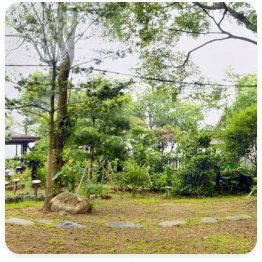
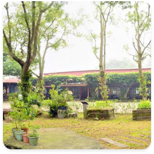
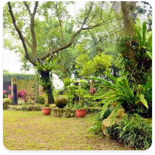
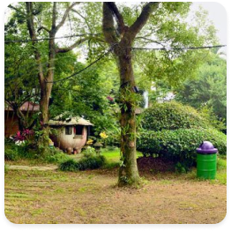
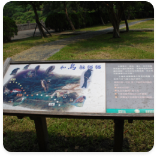
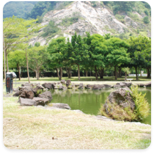
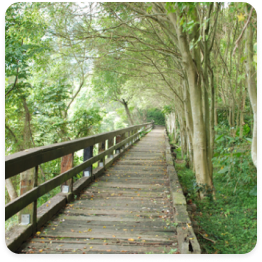
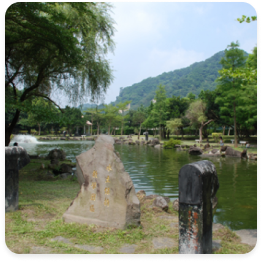

沉砂池
土地開發期間為避免降雨所產生的土壤沖蝕到下游造成災害，於適當地區設置格狀的沉砂池，讓水流流速減低，並將所挾帶的泥砂沉降於池中。
框型格梁客土植生
模擬天然降雨情形，展現山坡地之不同使用方式，分別為植草區、覆蓋區、裸露區，在雨滴打擊下地表產生之沖蝕速度，其目地在提醒人們應該合理使用土地，重視水土保持，珍惜自然資源。
齒狀消能塊
在整理出之45度斜度上，構築水泥格梁，再將一包包「客土包」堆放於格梁框內，土包內放入土壤及肥料，並於土包上栽植草類，一段時間後，斜坡上就被草覆蓋，綠意盎然。
降雨沖蝕槽
模擬天然降雨情形，展現山坡地之不同使用方式，分別為植草區、覆蓋區、裸露區，在雨滴打擊下地表產生之沖蝕速度，其目地在提醒人們應該合理使用土地，重視水土保持，珍惜自然資源。
露營區
夾在貴子坑溪雨水磨坑溪中間的採土區，經整治成125、110及100三個平台，並加綠化植生及設置水池、休閒、露營及團康活動設施後，現在已成為一個休閒遊憩的好去處，亦是本市重要露營活動場所。
地質觀察棧道
土地開發期間為避免降雨所產生的土壤沖蝕到下游造成災害，於適當地區設置格狀的沉砂池，讓水流流速減低，並將所挾帶的泥砂沉降於池中。
加勁擋土牆
夾在貴子坑溪雨水磨坑溪中間的採土區，經整治成125、110及100三個平台，並加綠化植生及設置水池、休閒、露營及團康活動設施後，現在已成為一個休閒遊憩的好去處，亦是本市重要露營活動場所。
格樑護坡
土地開發期間為避免降雨所產生的土壤沖蝕到下游造成災害，於適當地區設置格狀的沉砂池，讓水流流速減低，並將所挾帶的泥砂沉降於池中。
坡地雨量站
模擬天然降雨情形，展現山坡地之不同使用方式，分別為植草區、覆蓋區、裸露區，在雨滴打擊下地表產生之沖蝕速度，其目地在提醒人們應該合理使用土地，重視水土保持，珍惜自然資源。
植被工程
夾在貴子坑溪雨水磨坑溪中間的採土區，經整治成125、110及100三個平台，並加綠化植生及設置水池、休閒、露營及團康活動設施後，現在已成為一個休閒遊憩的好去處，亦是本市重要露營活動場所。
氣象觀測坪
土地開發期間為避免降雨所產生的土壤沖蝕到下游造成災害，於適當地區設置格狀的沉砂池，讓水流流速減低，並將所挾帶的泥砂沉降於池中。
五指山地層教學
模擬天然降雨情形，展現山坡地之不同使用方式，分別為植草區、覆蓋區、裸露區，在雨滴打擊下地表產生之沖蝕速度，其目地在提醒人們應該合理使用土地，重視水土保持，珍惜自然資源。
護坡工法
夾在貴子坑溪雨水磨坑溪中間的採土區，經整治成125、110及100三個平台，並加綠化植生及設置水池、休閒、露營及團康活動設施後，現在已成為一個休閒遊憩的好去處，亦是本市重要露營活動場所。
植物根系觀察箱
土地開發期間為避免降雨所產生的土壤沖蝕到下游造成災害，於適當地區設置格狀的沉砂池，讓水流流速減低，並將所挾帶的泥砂沉降於池中。
溪流整治示範區
模擬天然降雨情形，展現山坡地之不同使用方式，分別為植草區、覆蓋區、裸露區，在雨滴打擊下地表產生之沖蝕速度，其目地在提醒人們應該合理使用土地，重視水土保持，珍惜自然資源。